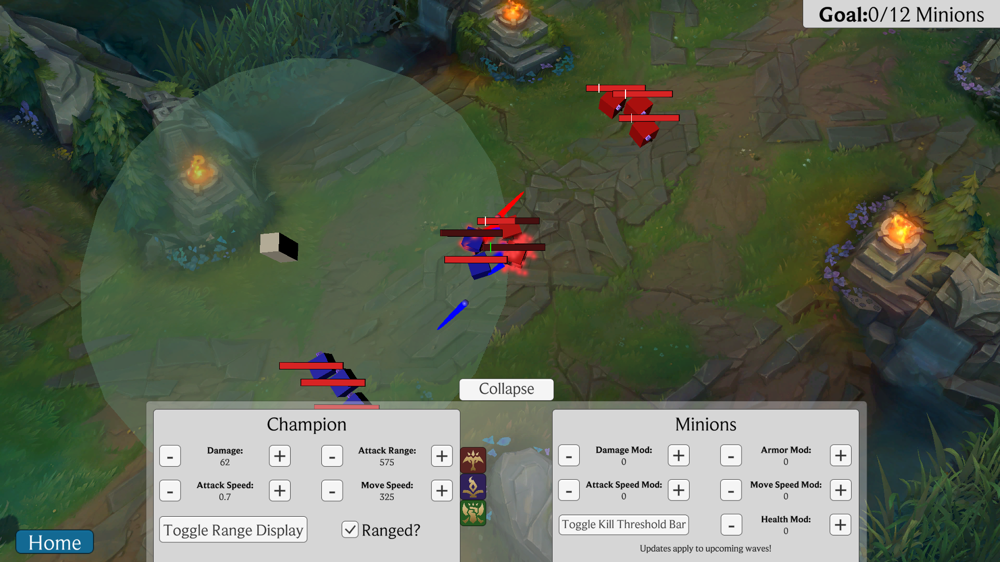

Educational Software Project
Minion Farming Simulator


This is a project I worked on for my educational software design class at NJIT. Using Unity, I made a tool to educate what minions are, their purpose, and how to last hit them in League of Legends. Different from my game dev class projects, this one was designed first to be educational, second to be a game. We had to implement a tutorial as well as a first level. We also had to put in our design ideas and use scenarios for our projects into an "intro" section.
Features
Gameplay
The gameplay is heavily modeled around League of Legends. You right click to move and target and that's about it for movement. The goals of the simulator are to last hit minions, with the first level requiring you to clear 12 minions.
Intro
In this intro, I introduce the game as well as the thought process behind who this software is for. It goes through a scenario, a persona to put through this persona, and why the software is of use to them.
Tutorial
This tutorial teaches users how to use the simulator as well as why minions are important to last hit. It also goes over the different elements in the parameter panel piece by piece.
Parameter Panel
This is the main reason you'd want to use this tool instead of loading up a League of Legends Practice Tool game. Being able to modify your settings on the fly to create your own special conditions is very valuable to quickly getting the feel for when to last hit a minion.